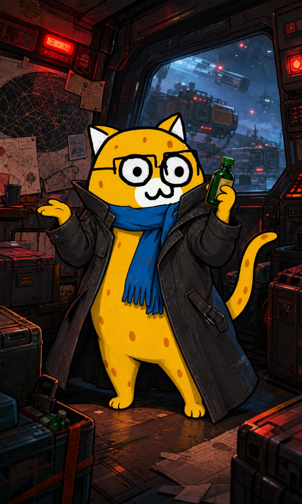

Case 01 / Piracy
抢夺货运飞船
多次拦截深空货运飞船，劫走燃料、矿物与补给箱；事后还试图向受害船队索要“加班拦截费”。
Interstellar Most Wanted / Rank 01
Alias: 塔里木的急支糖浆
全宇宙都在找。
本人也经常找不到自己停船的位置。
River-lee 的头号宿敌，工业航线的常驻麻烦，以及星际执法系统里少数能让危险等级与事故频率同时爆表的名字。
读取犯罪记录
Selected Incidents
急支糖浆专门袭扰无限电报的无人货运线路、补给舰与工业商队。每次行动都准备周密，唯一的问题是计划通常在本人开始执行之后才第一次被本人看见。
Case 01 / Piracy
多次拦截深空货运飞船，劫走燃料、矿物与补给箱；事后还试图向受害船队索要“加班拦截费”。
Case 02 / Sabotage
涉嫌破坏边境城市的外环能源塔，导致整片港区停摆三十六小时。官方评价：危险，混乱，且报复心极强。
Case 03 / Convoy
成功潜伏十二小时，却把眼镜上的雾当成星云，追错方向。商队毫发无损，逃犯本人提交了燃料报销申请。
Public Safety Notice
如发现目标，请勿靠近。
尤其不要问“你这糖浆保真吗”。上一个提问者听了四小时创业计划，现在仍在恢复。